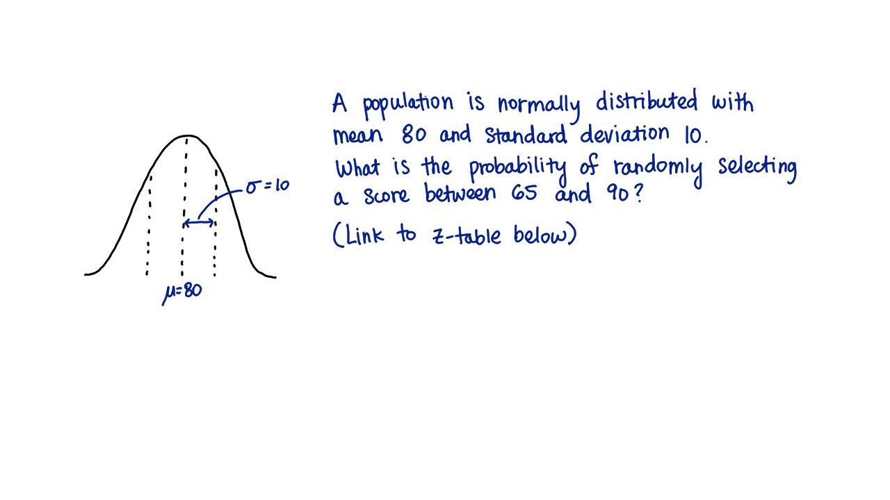

09. 9. 65 和 90 之间
- 65 和 90 之间
Start Quiz:

INSTRUCTOR NOTE:
对于一个均值为 80，标准偏差为 10 的正态分布，从中随机取出一个值，它在 65 和 90 之间的概率是多少？用比例写出，保留2位小数。
z 表格的链接。
对你的 z 值四舍五入，精确到小数点后两位，并使用 z 表中显示的精确值。
z 表格的链接。
对你的 z 值四舍五入，精确到小数点后两位，并使用 z 表中显示的精确值。